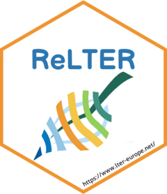
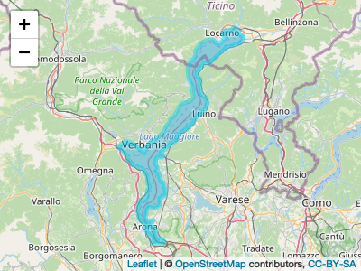
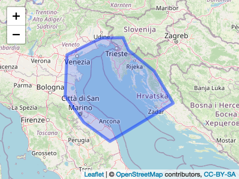
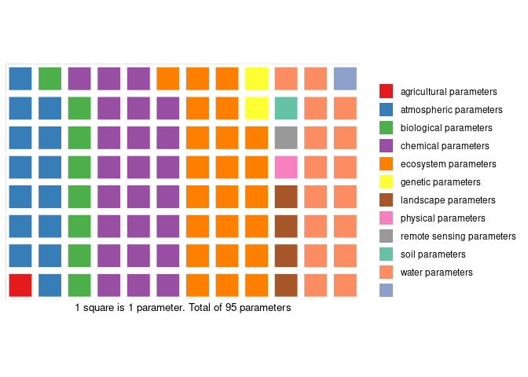
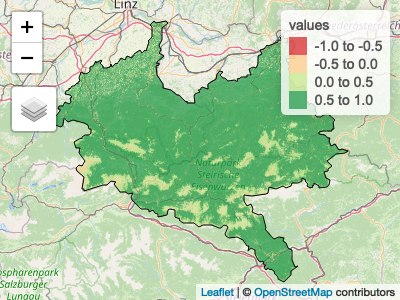

ReLTER is an R package that: provides access to DEIMS-SDR, allows interact with software implemented by eLTER Research Infrastructure (RI) and improves the data/information shared by them.
ReLTER is a R package devoted to access, interact and improve the information and the data shared by Long Term Ecological Research (LTER) network. This package is born within eLTER H2020 major project that will help advance the development of European Long-Term Ecosystem Research Infrastructures (eLTER RI).
The ReLTER package functions in particular allow to:
retrive the information about entities (e.g. sites, datasets, and activities) shared by DEIMS-SDR (see e.g. get_site_info function);
elaborate the information of single site or merge info from national network sites or entire International LTER (ILTER) in order to provide maps, figures, graphs etc (see e.g. get_network_sites, produce_site_map or produce_site_parameters_pie functions);
interact with the ODSEurope managed by members of the Geo-harmonizer project starting with the dataset shared by DEIMS-SDR (see e.g. get_site_ODS function);
improve the quality of the dataset (see e.g. get_id_worms).
Functions currently implemented are derived from the discussion of the needs declared by eLTER users community.
The ReLTER package shall definitely follow the progress of eLTER-RI infrastructure and evolving with the improvements and develop of new tools.
📔 Citation
To cite ReLTER please use: Alessandro Oggioni, Micha Silver, Luigi Ranghetti & Paolo Tagliolato. (2021). oggioniale/ReLTER: ReLTER v1.0.0 (1.0.0). Zenodo. https://doi.org/10.5281/zenodo.5576813
or:
@software{alessandro_oggioni_2021_5576813,
author = {Alessandro Oggioni and Micha Silver and Luigi Ranghetti and Paolo Tagliolato},
title = {oggioniale/ReLTER: ReLTER v1.0.0},
month = nov,
year = 2021,
publisher = {Zenodo},
version = {1.0.0},
doi = {10.5281/zenodo.5576813},
url = {https://doi.org/10.5281/zenodo.5576813}
}📖 Documentation
Visit the ReLTER website at oggioniale.github.io/ReLTER/ for further documentation, examples, and installation of the package.
⏬ Installation
You can install the development version of ReLTER from GitHub with:
install.packages("devtools")
devtools::install_github("oggioniale/ReLTER")If you wish to help develop this package, please follow the contributing guidelines.
📝 Examples
Some examples of the possible capabilities of this library appear below. These examples demonstrate interaction with the DEIMS-SDR API.
get_site_info(category = “Boundaries”)
The get_site_info function, using category “Boundaries”, creates a Leaflet map overlayed with the boundaries of the site (e.g. Lake Maggiore) using the site geographical boundaries provided by DEIMS-SDR. This function returns an sf object.
library(dplyr)
siteBoundaries <- ReLTER::get_site_info(
deimsid = 'https://deims.org/f30007c4-8a6e-4f11-ab87-569db54638fe',
category = "Boundaries"
)
leaflet::leaflet(siteBoundaries) %>%
leaflet::addTiles() %>%
leaflet::addPolygons()
#siteBoundariesget_network_parameters()
The get_network_parameters function retrieves a list of parameters collected by sites that are part of a given network (e.g. LTER-Italy). Information is gathered from those sites that are part of the specified network id, on DEIMS-SDR. The function returns a tibble.
library(dplyr)
invisible(
utils::capture.output(
listParams <- ReLTER::get_network_parameters(
networkDEIMSID = 'https://deims.org/network/7fef6b73-e5cb-4cd2-b438-ed32eb1504b3'
)
)
)
knitr::kable(listParams[1:10, ] %>% dplyr::rows_insert(tibble(parameterLabel = "...", parameterUri = "...")))| parameterLabel | parameterUri |
|---|---|
| atmospheric parameter | http://vocabs.lter-europe.net/EnvThes/20937 |
| ecosystem parameter | http://vocabs.lter-europe.net/EnvThes/20939 |
| conductivity | http://vocabs.lter-europe.net/EnvThes/22089 |
| dissolved nutrient | http://vocabs.lter-europe.net/EnvThes/22107 |
| dissolved organic carbon in water | http://vocabs.lter-europe.net/EnvThes/10307 |
| ecosystem structure | http://vocabs.lter-europe.net/EnvThes/21475 |
| inorganic nutrient content | http://vocabs.lter-europe.net/EnvThes/22137 |
| percent carbon | http://vocabs.lter-europe.net/EnvThes/22181 |
| percent organic carbon | http://vocabs.lter-europe.net/EnvThes/22183 |
| total carbon | http://vocabs.lter-europe.net/EnvThes/22296 |
| … | … |
get_dataset_info()
The get_dataset_info function retrieves a table with information about specific datasets shared through DEIMS-SDR.
tDataset <- ReLTER::get_dataset_info(datasetid = "https://deims.org/dataset/38d604ef-decb-4d67-8ac3-cc843d10d3ef")
leaflet::leaflet(tDataset) %>%
leaflet::addTiles() %>%
leaflet::addPolygons()
tDataset
#> Simple feature collection with 1 feature and 33 fields
#> Geometry type: POLYGON
#> Dimension: XY
#> Bounding box: xmin: 11.88721 ymin: 43.20518 xmax: 15.86426 ymax: 45.91294
#> Geodetic CRS: WGS 84
#> # A tibble: 1 × 34
#> title abstract keywords uri type dateRange.from dateRange.to relatedSite
#> * <chr> <chr> <list> <chr> <chr> <chr> <lgl> <list>
#> 1 LTER … The prese… <df [5 … http… data… 1965-01-01 NA <df [1 × 4…
#> # … with 26 more variables: contacts.corresponding <list>,
#> # contacts.creator <list>, contacts.metadataProvider <lgl>,
#> # observationParameters <list>, observationSpecies <list>, dataPolicy <list>,
#> # doi <chr>, onlineLocation <list>, legal.accessUse <list>,
#> # legal.rights <lgl>, legal.legalAct <lgl>, legal.citation <lgl>,
#> # method.instrumentation <lgl>, method.qualityAssurance <lgl>,
#> # method.methodUrl <list>, method.methodDescription <list>, …get_site_info(category = “RelateRes”)
The get_site_info function, using category = “RelateRes”, provides a list of related resources associated with a site within DEIMS-SDR.
tSiteRelatedResources <- ReLTER::get_site_info(
deimsid = "https://deims.org/f30007c4-8a6e-4f11-ab87-569db54638fe",
category = "RelateRes"
)
tSiteRelatedResources$relatedResources[[1]]
#> relatedResourcesTitle
#> 1 Biovolume of Phytoplankton in Lake Maggiore site code IT_SI001137_within the period 1981 - 2010
#> 2 Atmospheric deposition in Pallanza, Lake Maggiore watershed, 1980-2018
#> 3 Phytoplankton_Biomass_Lake Maggiore_Ghiffa_station-1984-2018
#> 4 Water chemistry of Lake Maggiore, Ghiffa station, 1988-2018
#> 5 Transparency (Secchi depth) of Lake Maggiore, Ghiffa station, 1988-2018
#> 6 Chlorophyll a_Lake_Maggiore_Ghiffa_Station-1984-2018
#> 7 Water discharge of River Ticino, Lake Maggiore outlet, 1988-2018
#> relatedResourcesChanged
#> 1 2021-08-25T16:38:25+0200
#> 2 2020-12-13T20:06:48+0100
#> 3 2020-12-16T10:46:15+0100
#> 4 2021-11-03T06:10:14+0100
#> 5 2020-12-13T20:10:34+0100
#> 6 2021-01-10T21:48:49+0100
#> 7 2021-07-21T12:35:07+0200
#> uri
#> 1 https://deims.org/dataset/d9e94776-e7a8-11e2-a655-005056ab003f
#> 2 https://deims.org/dataset/0ce46362-0aab-482a-b1f0-a444a5dada39
#> 3 https://deims.org/dataset/0ab8425a-d574-4575-8ba9-5275c607b0c5
#> 4 https://deims.org/dataset/69564188-89de-4879-ad88-4aa97c1d005d
#> 5 https://deims.org/dataset/e538c743-2149-49e3-9025-14a04ea7c90d
#> 6 https://deims.org/dataset/c857c8e2-48aa-4dcd-a7fb-e089bd4c5c4e
#> 7 https://deims.org/dataset/fb3a8fec-0c1f-4c3a-81d5-364c7e6078c4produce_site_parameters_waffle()
The produce_site_parameters_waffle function provides a grouping of parameters, as measured within a site, in a “waffle chart” representation.
ReLTER::produce_site_parameters_waffle(
deimsid = "https://deims.org/f30007c4-8a6e-4f11-ab87-569db54638fe"
)
#> # A tibble: 11 × 4
#> parameterGroups n freq label
#> <chr> <int> <dbl> <chr>
#> 1 agricultural parameter 1 0.0105 1.1%
#> 2 atmospheric parameter 14 0.147 14.7%
#> 3 biological parameter 8 0.0842 8.4%
#> 4 chemical parameter 24 0.253 25.3%
#> 5 ecosystem parameter 23 0.242 24.2%
#> 6 genetic parameter 2 0.0211 2.1%
#> 7 landscape parameter 4 0.0421 4.2%
#> 8 physical parameter 1 0.0105 1.1%
#> 9 remote sensing parameter 1 0.0105 1.1%
#> 10 soil parameter 1 0.0105 1.1%
#> 11 water parameter 16 0.168 16.8%get_site_ODS()
The get_site_ODS function retrieves datasets from OpenDataScience, and crops to the boundary of the specified eLTER site.
siteNDVI <- ReLTER::get_site_ODS(
deimsid = "https://deims.org/d0a8da18-0881-4ebe-bccf-bc4cb4e25701",
dataset = "ndvi_summer"
)
siteBoundary <- ReLTER::get_site_info(
deimsid = "https://deims.org/d0a8da18-0881-4ebe-bccf-bc4cb4e25701",
category = "Boundaries"
)
tmap::tmap_mode("view")
pal <- RColorBrewer::brewer.pal("RdYlGn", n = 5)
tmap::tm_basemap(leaflet::providers$OpenStreetMap.Mapnik) +
tmap::tm_shape(siteNDVI, raster.downsample = TRUE) +
tmap::tm_raster(palette = pal, alpha = 0.7) +
tmap::tm_shape(siteBoundary) +
tmap::tm_borders("black")
👩💻 Persons involved 👨💻
Alessandro Oggioni https://orcid.org/0000-0002-7997-219X (CNR, Institute for Electromagnetic Sensing of the Environment - IREA)
Micha Silver https://orcid.org/0000-0002-1128-1325 (Ben Gurion University - BGU)
Luigi Ranghetti https:://orcid.org/0000-0001-6207-5188 (CNR, Institute for Electromagnetic Sensing of the Environment - IREA)
Paolo Tagliolato https:://orcid.org/0000-0002-0261-313X (CNR, Institute for Electromagnetic Sensing of the Environment - IREA)
For a exhaustive list of contributors please visit authors page.
👍 Acknowledgements
This work has been partially funded from the European Union’s Horizon 2020 research and innovation programme under the H2020 eLTER-Plus Project grant agreement No 871128.